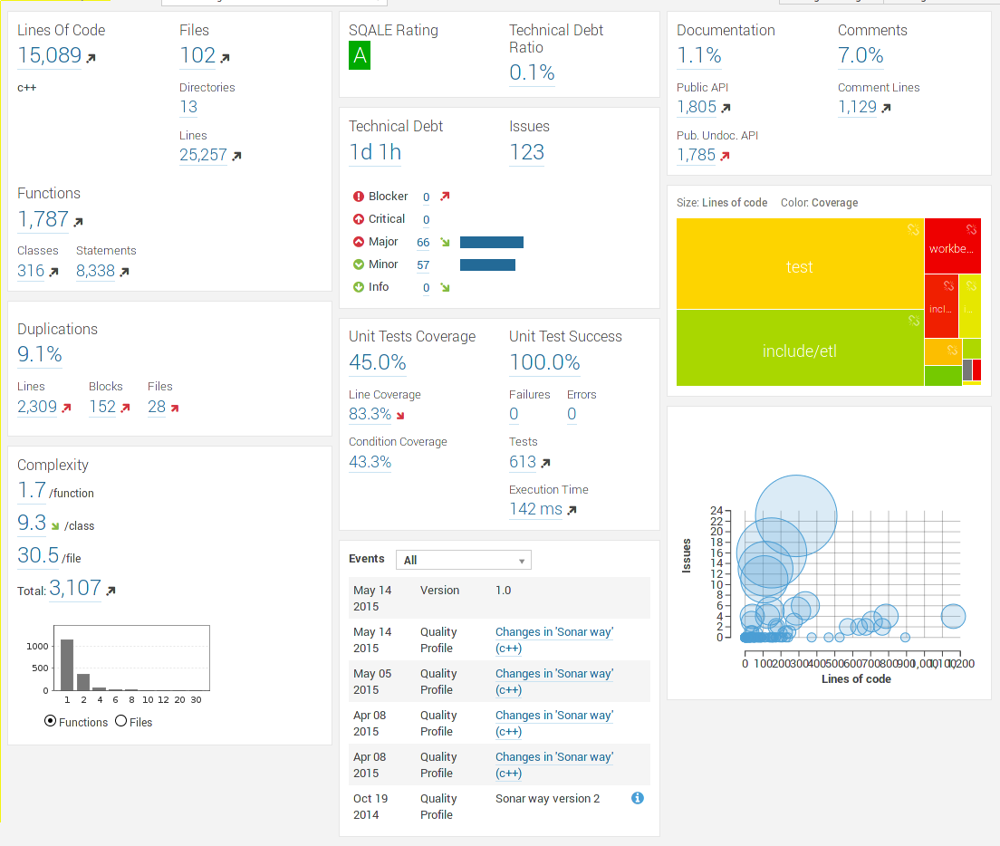
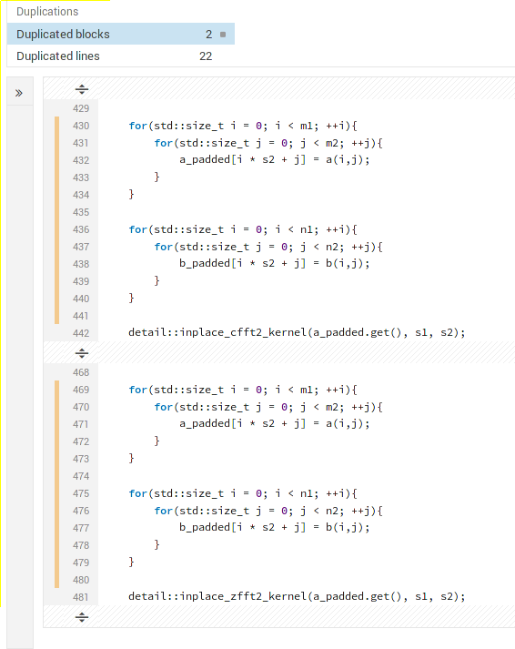
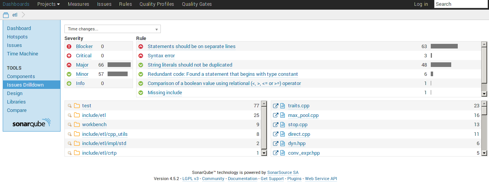
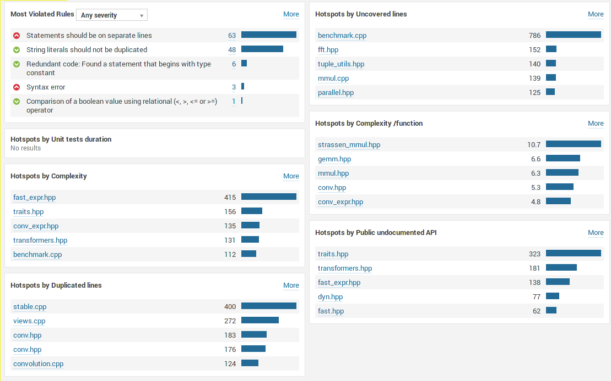
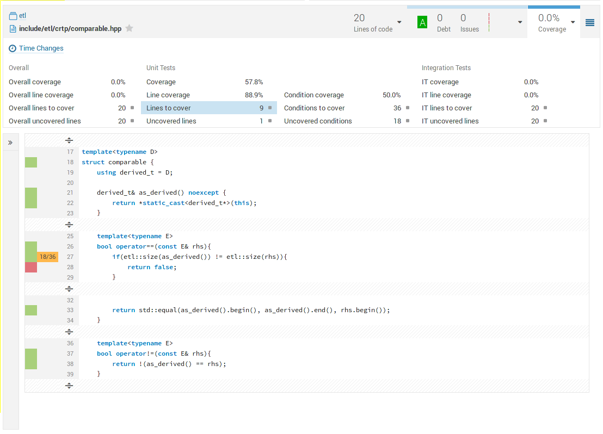

Sonar C++ Community Plugin Review
It's been a long time since I have written on this blog. I have had quite a lot of work between my Ph.D and my teaching. I have several projects going on, I'll try to write updates on them later on.
Some time ago, I wrote an article about the official C++ plugin for Sonar <http://baptiste-wicht.com/posts/2014/10/sonarqube-inspections-for-cpp-projects.html>. I was quite disappointed by the quality of a plugin. I was expecting more from an expensive official plugin.
There is an open-source alternative to the commercial plugin: sonar-cxx-plugin <https://github.com/wenns/sonar-cxx>. I already tested it quite some time ago (a development version of the 0.9.1 version) and the results were quite bad. I'm using C++11 and C++14 in almost all of my projects and the support was quite bad at that time. Happily, this support has now gotten much better :) In this article, I'll talk about the version 0.9.2.
Usage
The usage of this plugin is very easy, you don't need any complicated build wrapping techniques for it. You simply need to complete a sonar-project.properties file:
sonar.projectKey=etl sonar.projectName=etl sonar.projectVersion=1.0 sonar.sourceEncoding=UTF-8 sonar.sources=include,test,workbench sonar.language=c++
After that, you simply have to use sonar-runner as for any other Sonar project:
sonar-runner
And the analysis will be run.
I haven't had any issues with the analysis. However, the plugin is not yet completely C++11/C++14 compatible, therefore I'm encountering a lot of parser errors during the analysis. When an error is encountered by the parser, the line is skipped and the parser goes to the next line. This means that the analysis of the line is incomplete, which may lead to false positives or to missing issues. This comes from that sonar-cxx uses its own parser, which is to on par with clang-compatible parsers for instance.
Here is the Sonar summary of my ETL project:
Inspections
This plugin supports some inspections on itself. Nevertheless, you have to enable since it seems that most of them are disable by default. Code duplication is also automatically generated during the analysis:
The philosophy of this project is not to develop all inspections, but to integrate with other tools. For instance, cppcheck is already supported and the integration works perfectly. Here are the tools that sonar-cxx supports for quality analysis:
- cppcheck
- valgrind
- Vera++
- RATS
- PC-Lint
I have only tested cppcheck for now. I plan to use valgrind running on my tests in the future. I don't plan to use the others.
It should also be noted that the plugin supports compiler warnings coming from G++ and Visual Studio. I don't use this since I compile all my projects with -Werror.
The biggest absent here is Clang, there is no support for its warnings, its static-analyzer or its advanced clang-tidy tool. If clang-tidy support does not come in the near future, I'm planning to try to add it myself, provided I find some time.
You can have to some inspections on one of my project:
As with any Sonar projects, you have access to the Hotsposts view:
Unit Tests Integration
I have been able to integrate my unit tests results inside Sonar. The plugin expects JUnit compatible format. Several of C++ unit test libraries already generates compatible format. In my case, I used Catch and it worked very well.
What is even more interesting is the support for code coverage. You have to run your coverage-enabled executable and then use gcovr to generate an XML file that the plugin can read.
This support works quite well. The only thing I haven't been able to make work is the execution time computation of the unit tests, but that is not something I really care about.
Here are the coverage results for one of my files:
Conclusion
Pros
- Support of a lot of external tools
- Very easy to use
- Duplicated code analysis
- Very good code coverage analysis integration
Cons
- Too few integrated inspections
- Limited parsing of C++
- Not fully compatible with C++11/C++14
- False positives
- Not enough love for clang (compiler warnings, clang-tidy, tooling, static-analyzer, ...)
The provided metrics are really good, the usage is quite simple and this plugin supports some external tools adding interesting inspections. Even if this plugin is not perfect, it is a very good way to do Continuous Quality Analysis of your C++ projects. I personally find it superior to the official plugin. The usage is more simple (no build-wrapper that does not work), it supports more external tools and supports JUnit reports. On the other hand, it has much less integrated inspections and rely more on external tools. Both have problems with modern C++ features.
What I would really like in this plugin is the support of the clang-tidy analyzer (and other Clang analysis tools) and also complete C++11/C++14 support. I honestly think that the only way to fix the latter is to switch to Clang parsing with libtooling rather than developing an in-house parser, but that is not up to me.
I will definitely continue to use this plugin to generate metrics for my C++ projects. I use it with Jenkins which launch the analysis every time I push to one my git repositories. This plugin definitely shows promises.
Comments
Comments powered by Disqus